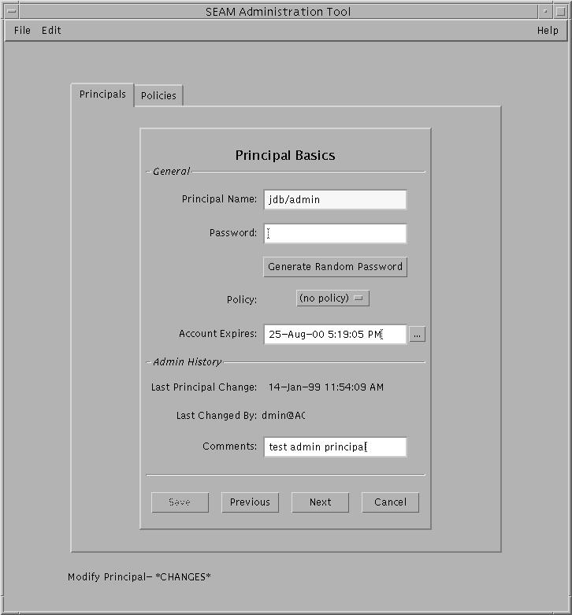
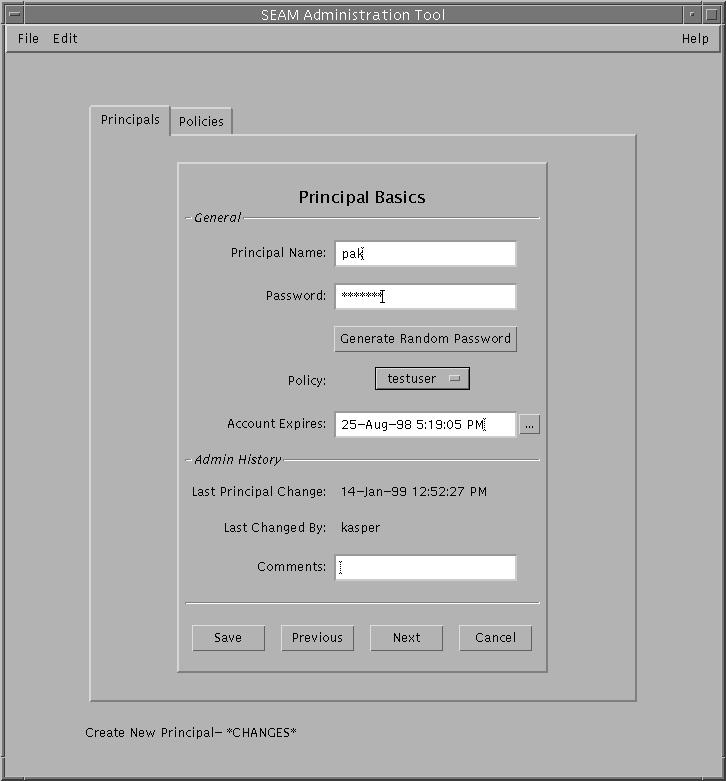

System Administration Guide: Security Services
|
||||||||||||||||||||||||||||||||||||||||||||||||||||||||||
|
1. Security Services (Overview) Part II System, File, and Device Security 2. Managing Machine Security (Overview) 3. Controlling Access to Systems (Tasks) 4. Virus Scanning Service (Tasks) 5. Controlling Access to Devices (Tasks) 6. Using the Basic Audit Reporting Tool (Tasks) 7. Controlling Access to Files (Tasks) Part III Roles, Rights Profiles, and Privileges 8. Using Roles and Privileges (Overview) 9. Using Role-Based Access Control (Tasks) 10. Role-Based Access Control (Reference) Part IV Solaris Cryptographic Services 13. Solaris Cryptographic Framework (Overview) 14. Solaris Cryptographic Framework (Tasks) 15. Solaris Key Management Framework Part V Authentication Services and Secure Communication 16. Using Authentication Services (Tasks) 19. Using Solaris Secure Shell (Tasks) 20. Solaris Secure Shell (Reference) 21. Introduction to the Kerberos Service 22. Planning for the Kerberos Service 23. Configuring the Kerberos Service (Tasks) 24. Kerberos Error Messages and Troubleshooting 25. Administering Kerberos Principals and Policies (Tasks) Ways to Administer Kerberos Principals and Policies Administering Kerberos Policies 26. Using Kerberos Applications (Tasks) 27. The Kerberos Service (Reference) 28. Solaris Auditing (Overview) 29. Planning for Solaris Auditing 30. Managing Solaris Auditing (Tasks) |
Administering Kerberos PrincipalsThis section provides the step-by-step instructions used to administer principals with the SEAM Tool. This section also provides examples of command-line equivalents, when available. Administering Kerberos Principals (Task Map)
Automating the Creation of New Kerberos PrincipalsEven though the SEAM Tool provides ease-of-use, it doesn't provide a way to automate the creation of new principals. Automation is especially useful if you need to add 10 or even 100 new principals in a short time. However, by using the kadmin.local command in a Bourne shell script, you can do just that. The following shell script line is an example of how to automate the creation of new principals: awk '{ print "ank +needchange -pw", $2, $1 }' < /tmp/princnames |
time /usr/sbin/kadmin.local> /dev/nullThis example is split over two lines for readability. The script reads in a file called princnames that contains principal names and their passwords, and adds them to the Kerberos database. You would have to create the princnames file, which contains a principal name and its password on each line, separated by one or more spaces. The +needchange option configures the principal so that the user is prompted for a new password during login with the principal for the first time. This practice helps to ensure that the passwords in the princnames file are not a security risk. You can build more elaborate scripts. For example, your script could use the information in the name service to obtain the list of user names for the principal names. What you do and how you do it is determined by your site's needs and your scripting expertise. How to View the List of Kerberos PrincipalsAn example of the command-line equivalent follows this procedure.
Example 25-1 Viewing the List of Kerberos Principals (Command Line)In the following example, the list_principals command of kadmin is used to list all the principals that match test*. Wildcards can be used with the list_principals command. kadmin: list_principals test* test1@EXAMPLE.COM test2@EXAMPLE.COM kadmin: quit How to View a Kerberos Principal's AttributesAn example of the command-line equivalent follows this procedure.
Example 25-2 Viewing a Kerberos Principal's AttributesThe following example shows the first window when you are viewing the jdb/admin principal. Example 25-3 Viewing a Kerberos Principal's Attributes (Command Line)In the following example, the get_principal command of kadmin is used to view the attributes of the jdb/admin principal. kadmin: getprinc jdb/admin Principal: jdb/admin@EXAMPLE.COM Expiration date: Fri Aug 25 17:19:05 PDT 2004 Last password change: [never] Password expiration date: Wed Apr 14 11:53:10 PDT 2003 Maximum ticket life: 1 day 16:00:00 Maximum renewable life: 1 day 16:00:00 Last modified: Thu Jan 14 11:54:09 PST 2003 (admin/admin@EXAMPLE.COM) Last successful authentication: [never] Last failed authentication: [never] Failed password attempts: 0 Number of keys: 1 Key: vno 1, DES cbc mode with CRC-32, no salt Attributes: REQUIRES_HW_AUTH Policy: [none] kadmin: quit How to Create a New Kerberos PrincipalAn example of the command-line equivalent follows this procedure.
Example 25-4 Creating a New Kerberos PrincipalThe following example shows the Principal Basics panel when a new principal called pak is created. The policy is set to testuser. Example 25-5 Creating a New Kerberos Principal (Command Line)In the following example, the add_principal command of kadmin is used to create a new principal called pak. The principal's policy is set to testuser. kadmin: add_principal -policy testuser pak Enter password for principal "pak@EXAMPLE.COM": <Type the password> Re-enter password for principal "pak@EXAMPLE.COM": <Type the password again> Principal "pak@EXAMPLE.COM" created. kadmin: quit How to Duplicate a Kerberos PrincipalThis procedure explains how to use all or some of the attributes of an existing principal to create a new principal. No command-line equivalent exists for this procedure.
How to Modify a Kerberos PrincipalAn example of the command-line equivalent follows this procedure.
Example 25-6 Modifying a Kerberos Principal's Password (Command Line)In the following example, the change_password command of kadmin is used to modify the password for the jdb principal. The change_password command does not let you change the password to a password that is in the principal's password history. kadmin: change_password jdb Enter password for principal "jdb": <Type the new password> Re-enter password for principal "jdb": <Type the password again> Password for "jdb@EXAMPLE.COM" changed. kadmin: quit To modify other attributes for a principal, you must use the modify_principal command of kadmin. How to Delete a Kerberos PrincipalAn example of the command-line equivalent follows this procedure.
Example 25-7 Deleting a Kerberos Principal (Command Line)In the following example, the delete_principal command of kadmin is used to delete the jdb principal. kadmin: delete_principal pak Are you sure you want to delete the principal "pak@EXAMPLE.COM"? (yes/no): yes Principal "pak@EXAMPLE.COM" deleted. Make sure that you have removed this principal from all ACLs before reusing. kadmin: quit How to Set Up Defaults for Creating New Kerberos PrincipalsNo command-line equivalent exists for this procedure.
How to Modify the Kerberos Administration PrivilegesEven though your site probably has many user principals, you usually want only a few users to be able to administer the Kerberos database. Privileges to administer the Kerberos database are determined by the Kerberos access control list (ACL) file, kadm5.acl. The kadm5.acl file enables you to allow or disallow privileges for individual principals. Or, you can use the '*' wildcard in the principal name to specify privileges for groups of principals.
Example 25-8 Modifying the Kerberos Administration PrivilegesThe following entry in the kadm5.acl file gives any principal in the EXAMPLE.COM realm with the admin instance all the privileges on the Kerberos database: */admin@EXAMPLE.COM * The following entry in the kadm5.acl file gives the jdb@EXAMPLE.COM principal the privileges to add, list, and inquire about any principal that has the root instance. jdb@EXAMPLE.COM ali */root@EXAMPLE.COM |
|||||||||||||||||||||||||||||||||||||||||||||||||||||||||
|
||||||||||||||||||||||||||||||||||||||||||||||||||||||||||